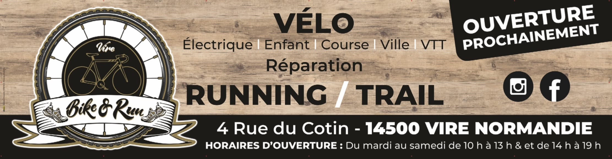

Vente de vélos & d'accessoires
Vélos neufs toutes pratiques, casques, équipement et accessoires, sélectionnés et préparés en atelier.
Vire Normandie — Calvados
Électrique | Enfant | Course | Ville | VTT
Réparation — Running / Trail
Une sélection de vélos, casques et chaussures orientée gammes intermédiaires et hautes, disponible en boutique. Les prix s'entendent TTC. Cliquez sur un produit pour ouvrir sa fiche.
Chargement du catalogue…

BIKE&RUN vous accueille à Vire pour choisir votre prochain vélo — VTT, course, ville, électrique ou enfant —, vous équiper de la tête aux pieds et entretenir votre matériel. Coureurs et traileurs y trouvent aussi chaussures et équipement adaptés aux chemins du bocage.
Vélos neufs toutes pratiques, casques, équipement et accessoires, sélectionnés et préparés en atelier.
Entretien et réparation toutes marques, quel que soit l'endroit où votre vélo a été acheté.
Un conseil personnalisé en boutique, pour repartir avec le matériel qui correspond vraiment à votre pratique.
Du mardi au samedi : 10 h – 13 h & 14 h – 19 h
Fermé dimanche et lundi